1. Электрика автомобиля
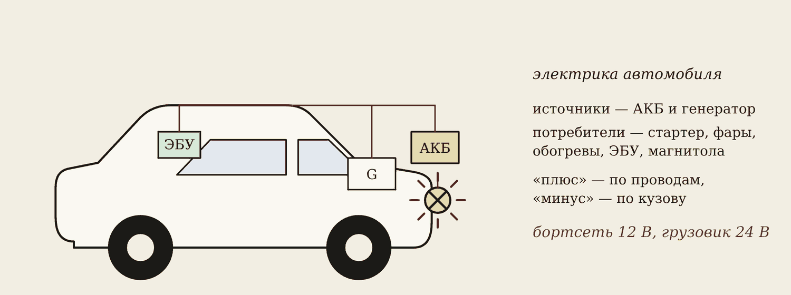
В современном автомобиле электрика делает почти всё: крутит стартер, поджигает смесь в цилиндрах, включает фары, управляет двигателем через блок управления (ЭБУ). Электротехника — наука о получении, передаче и использовании электрической энергии. Автомеханику она нужна каждый день.
Бортовая сеть — вся электрика машины. В ней есть:
- источники — аккумуляторная батарея (АКБ) и генератор;
- защита — предохранители;
- управление — выключатели и реле;
- потребители — стартер, зажигание, фары, обогревы, вентиляторы, ЭБУ, магнитола.
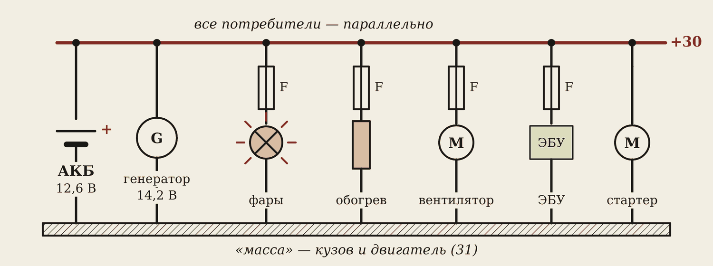
Аккумулятор работает, когда двигатель заглушен, и при пуске. Генератор — когда двигатель работает: он питает всё и заодно заряжает аккумулятор. Все потребители включены параллельно: каждый получает свои 12 вольт и включается отдельно.
12 вольт и 24 вольта
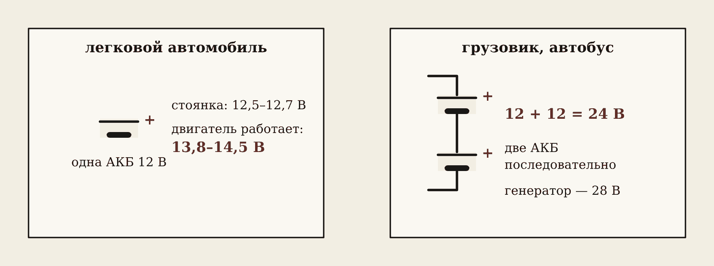
У легковых машин бортсеть 12 В, у грузовиков и автобусов — 24 В: две батареи по 12 В соединены последовательно. При той же мощности ток меньше — провода тоньше.
«Масса»
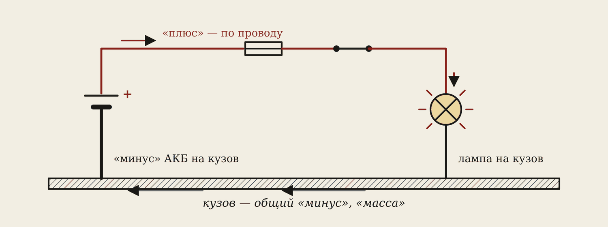
Если бы к каждой лампе тянули два провода, проводки было бы вдвое больше. Поэтому схема однопроводная: «плюс» идёт по проводу, а «минус» — по металлу кузова и двигателя. Это и называют «масса». Минус аккумулятора толстым проводом прикручен к кузову и двигателю.
Осторожно
Болт массы ржавеет и откручивается. Тогда лампа светит тускло, стартер крутит вяло, датчики врут. Искать такую неисправность будем на ПЗ № 1 — вольтметром.
Три цифры на мультиметре
Запомните
12,6 В — заряженный аккумулятор, двигатель заглушен (12,2 В и меньше — пора заряжать).
14,2 В — работает генератор (норма 13,8–14,5 В).
9,6 В — меньше этого при пуске быть не должно: иначе аккумулятор разряжен или изношен.
Как мерить: режим V⎓, красный щуп — на «+», чёрный — на «−» аккумулятора.
2. Ток и человек
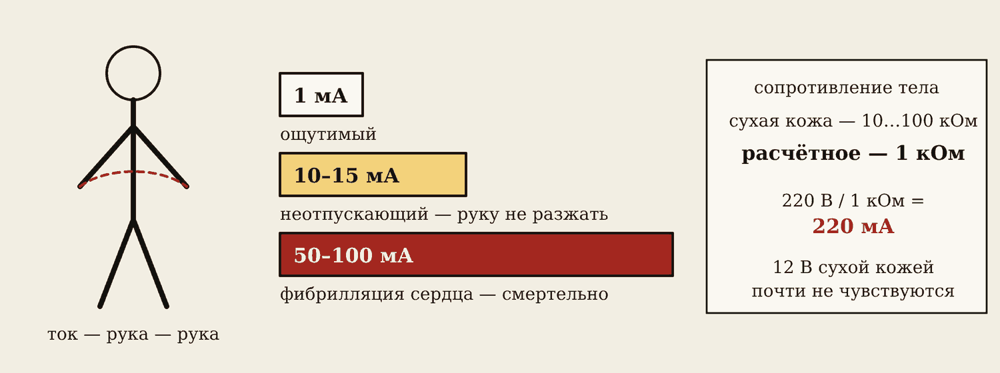
Человека поражает ток, который идёт через тело, а не вольты на табличке. Действие тока: тепловое (ожоги), электролитическое (разложение крови), механическое (судороги мышц), биологическое (остановка дыхания и сердца).
| Ток через тело | Что происходит |
|---|---|
| 1 мА | Ощутимый: покалывание |
| 10–15 мА | Неотпускающий: мышцы сводит, руку не разжать |
| 50–100 мА | Фибрилляция: сердце перестаёт качать кровь |
Сухая кожа — десятки килоом, мокрая — около 1 кОм. В расчётах берут 1 кОм. По закону Ома: 220 В / 1000 Ом = 0,22 А = 220 мА — смертельно. А 12 вольт через сухую кожу — доли миллиампера, их почти не чувствуют.
Где опасно в автосервисе
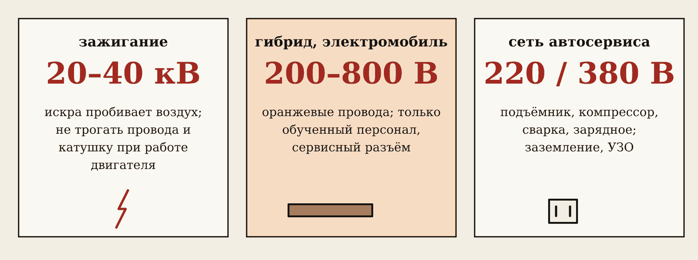
- Зажигание — катушка даёт 20–40 тысяч вольт. Удар резкий: рука дёргается, можно удариться о горячий двигатель или попасть в ремень. Не трогать провода и катушки на работающем двигателе.
- Гибриды и электромобили — тяговая батарея 200–800 В постоянного тока. Это смертельно. Высоковольтные провода оранжевые, работать с ними может только обученный персонал после отключения сервисного разъёма.
- Сеть 220/380 В — подъёмники, компрессоры, сварка, зарядные устройства.
Заземление и зануление
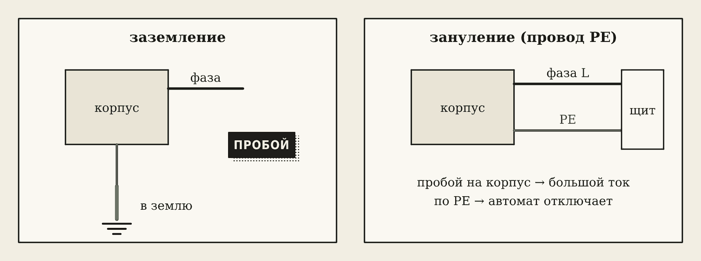
Изоляция внутри компрессора может пробиться, и фаза окажется на корпусе. Чтобы человек не попал под напряжение, корпус соединяют проводом:
- заземление — корпус соединён с землёй через заземлитель;
- зануление — корпус соединён с защитным проводом PE (жёлто-зелёный). При пробое ток идёт по нему, становится большим, и автомат отключает питание за доли секунды.
В розетке автосервиса три контакта: третий (металлические усики) — защитный. Удлинитель без него — опасен.
3. Короткое замыкание и первая помощь
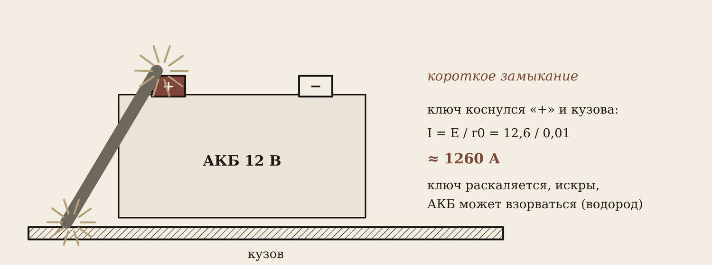
Короткое замыкание — «плюс» соединился с «массой» мимо нагрузки. Ток ограничивает только внутреннее сопротивление аккумулятора — сотые доли ома:
I = 12,6 / 0,01 ≈ 1260 А
Ключ раскаляется за секунды, летят брызги металла, может взорваться водород над банками. В проводке то же самое бывает, когда провод перетёрся о кузов, — тогда горит провод.
Предохранитель
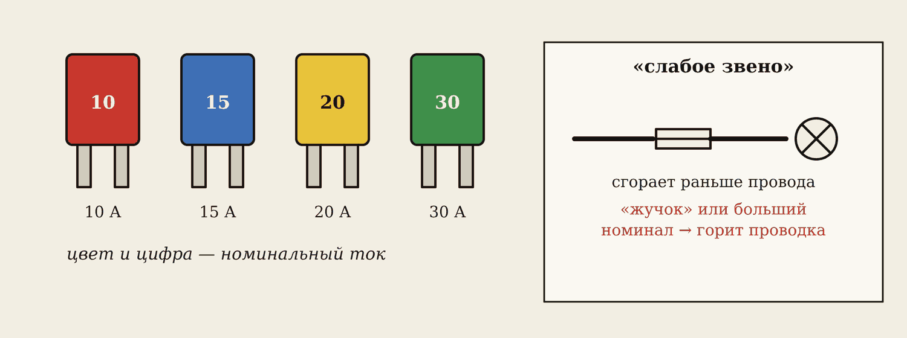
Предохранитель — специально «слабое звено». Он сгорает раньше, чем перегреется провод. Номинал — по цифре и цвету: 10 А красный, 15 А синий, 20 А жёлтый, 30 А зелёный.
Осторожно
Сгорел предохранитель — сначала найдите причину (замыкание, перегрузку), потом ставьте такой же номинал. Больший номинал или «жучок» из проволоки — защиты нет, при замыкании горит проводка.
Порядок снятия клемм
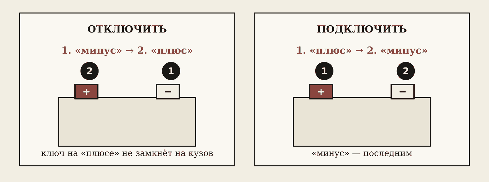
Запомните
Отключаем: сначала «минус», потом «плюс». Подключаем: сначала «плюс», последним «минус».
Почему так? Кузов соединён с «минусом». Пока «минус» подключён, ключ на «плюсе», задевший кузов, — короткое замыкание. Сняли «минус» первым — кузов обесточен, и ключ ничего не замкнёт. Перед снятием клемм выключите зажигание и потребители. Инструмент на аккумулятор не кладите. При зарядке — проветривать, рядом не курить.
Если человека ударило током
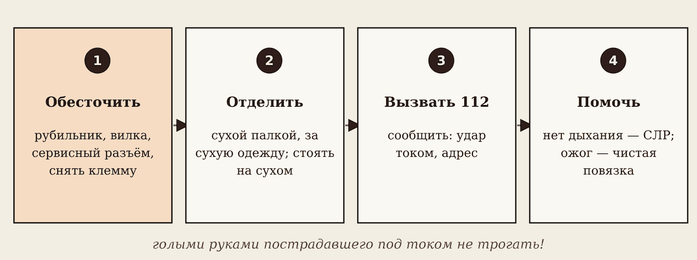
- Обесточить: рубильник, вилка из розетки, на гибриде — сервисный разъём.
- Если быстро не получается — отделить пострадавшего сухой палкой или за сухую одежду, стоя на сухом. Голыми руками не трогать: ток пойдёт и через вас.
- Вызвать 112: «удар током», адрес.
- Нет дыхания — сердечно-лёгочная реанимация до приезда скорой. Ожоги закрыть чистой повязкой, ничем не мазать.
Даже если человек чувствует себя нормально — к врачу: нарушение ритма сердца может проявиться позже.
4. Тетрадь по билетам
У каждого — отдельная тетрадь: 50 вопросов курса, 50 страниц. Дома подпишите все страницы по списку из карты курса (код вопроса и номер билета). На странице — пять строк: определение, формула в рамке, схема карандашом, где это в машине, как проверить. На дифзачёте билет — два вопроса и задача; тетрадь своей рукой — опора и допуск.
5. Домашнее задание
- Подпишите 50 страниц тетради, перепишите В1–В3.
- Сфотографируйте блок предохранителей любой машины и схему на его крышке. Расшифруйте 5 предохранителей: номинал, цвет, что защищает.
- Пройдите в лаборатории вкладку «Проверь себя» — вопросы 1–6.
Словарик
- Бортовая сеть — вся электрика автомобиля: источники, провода, защита, потребители.
- «Масса» — кузов и двигатель, общий «минус» (клемма 31).
- Генератор — источник тока при работающем двигателе, держит 13,8–14,5 В.
- Неотпускающий ток — 10–15 мА: мышцы сводит, руку не разжать.
- Зануление — соединение корпуса оборудования с защитным проводом PE.
- Короткое замыкание — «плюс» соединился с «массой» мимо нагрузки.
- Предохранитель — слабое звено цепи, сгорает раньше провода.
Эталоны в тетрадь
Перепишите в тетрадь по билетам — каждый эталон на отдельную страницу, с рисунком и строкой «Мой пример».
Электрика автомобиля
Электротехника и её место в автомобиле: бортовая сеть 12 и 24 В, однопроводная схема и «масса», источники и потребители электроэнергии.
- Электротехника — наука о получении, передаче и использовании электрической энергии. В автомобиле электрика пускает двигатель, поджигает смесь, светит, управляет и следит за работой узлов.
- Бортовая сеть: 12 В у легковых, 24 В у грузовиков и автобусов (две АКБ по 12 В последовательно). При работающем двигателе генератор держит 13,8–14,5 В (у 24-вольтовых — 27,5–28,5 В).
- Источники: аккумуляторная батарея (стоянка и пуск) и генератор (работающий двигатель). Потребители: стартер, зажигание, фары, обогревы, вентиляторы, ЭБУ, магнитола.
- Однопроводная схема: «плюс» идёт по проводам, «минус» — через кузов и двигатель, это «масса». Меньше меди, но окисленная «масса» — частая неисправность.
- Как проверить: мультиметр V⎓ на клеммах АКБ — 12,5–12,7 В без нагрузки (батарея заряжена), 13,8–14,5 В при работающем двигателе (генератор заряжает).
Ток и человек
Действие электрического тока на организм человека. Опасные напряжения в автосервисе: зажигание, высоковольтная часть гибридов и электромобилей, сеть 220/380 В оборудования. Заземление и зануление.
- Действие тока: тепловое (ожоги), электролитическое (разложение крови), механическое (судорога мышц), биологическое (остановка дыхания и сердца).
- Опасен ток через тело: 1 мА — ощутимый, 10–15 мА — неотпускающий (руку не разжать), 50–100 мА — фибрилляция сердца. Сухая кожа — десятки килоом, в расчётах берут 1 кОм (мокрая кожа): 220 В / 1 кОм = 220 мА — смертельно.
- 12 В бортсети через сухую кожу почти не ощущаются, но короткое замыкание АКБ даёт ожог и пожар. Опасны: зажигание 20–40 кВ, высоковольтная система гибрида и электромобиля 200–800 В (оранжевые провода), сеть 220/380 В подъёмников, компрессоров, сварки.
- Заземление — соединение корпуса оборудования с землёй. Зануление — соединение корпуса с защитным проводником PE: при пробое на корпус срабатывает автомат.
- Высоковольтную систему ремонтирует только обученный персонал: снять сервисный разъём, подождать 5–10 минут, проверить отсутствие напряжения, работать в диэлектрических перчатках.
Короткое замыкание и первая помощь
Защита от короткого замыкания и первая помощь: предохранители и плавкие вставки, порядок отключения АКБ, освобождение пострадавшего от действия тока.
- Короткое замыкание — соединение «плюса» с «массой» мимо нагрузки: ток в сотни ампер, провод плавится, загорается изоляция.
- Предохранитель — «слабое звено»: сгорает раньше провода. Номинал — по цвету и цифре: 10 А красный, 15 А синий, 20 А жёлтый, 30 А зелёный. Нельзя ставить «жучок» или предохранитель большего номинала.
- АКБ отключают так: сначала «минус», потом «плюс». Подключают наоборот: сначала «плюс», последним «минус». Тогда ключ на «плюсе» не замкнёт его на кузов.
- Пострадавшего освобождают от тока: обесточить (рубильник, вилка, сервисный разъём), отодвинуть сухой палкой или за сухую одежду, не касаясь тела; стоять на сухом.
- Затем вызвать 112, при отсутствии дыхания — сердечно-лёгочная реанимация до приезда скорой; ожог закрыть чистой повязкой.
Проверь себя
Сначала ответьте сами — в тетради или вслух. Потом нажмите на вопрос, чтобы увидеть ответ.
1Двигатель работает. Сколько вольт должно быть на клеммах АКБ?
13,8–14,5 В — генератор питает сеть и заряжает аккумулятор.
2Какую клемму аккумулятора снимают первой и почему?
«Минус»: после этого кузов обесточен, и ключ на «плюсе» не замкнёт его на кузов.
3Какой ток через тело не даёт разжать руку?
10–15 мА — неотпускающий ток.
4Почему 12 вольт почти не чувствуются, а 220 смертельны?
Ток через тело I = U / R: 220 В / 1 кОм = 220 мА, а 12 В через десятки килоом сухой кожи — доли миллиампера.
5Сгорел предохранитель 15 А. Что делать?
Найти причину (замыкание, перегрузку) и поставить такой же, 15 А. Больший номинал или «жучок» — пожар.
6Какого цвета высоковольтные провода гибрида и сколько там вольт?
Оранжевые, 200–800 В.
Попробуйте в лаборатории
Откройте на телефоне или компьютере — ничего устанавливать не нужно.
Ответы к «Проверь себя»
- 13,8–14,5 В — генератор питает сеть и заряжает аккумулятор.
- «Минус»: после этого кузов обесточен, и ключ на «плюсе» не замкнёт его на кузов.
- 10–15 мА — неотпускающий ток.
- Ток через тело I = U / R: 220 В / 1 кОм = 220 мА, а 12 В через десятки килоом сухой кожи — доли миллиампера.
- Найти причину (замыкание, перегрузку) и поставить такой же, 15 А. Больший номинал или «жучок» — пожар.
- Оранжевые, 200–800 В.